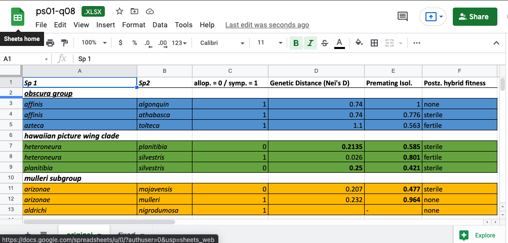

1 Biostatistics basics
Due Thursday, Jan 18, 2024 before lecture
Submit your answers via Google Classroom
Populations, estimates, sources of variation
In one or two sentences, what is the difference between a sample and a population? [1 point]
If you’re trying to study differences in species richness across locations, taxonomic misidentification can occur, what category of error or source of variation is this? [0.5 point]
- Bad luck
- Random variation
- Scientific
- Measurement error
What/which is an estimate (choose all that apply)? [0.5 point]
- The way we test a hypothesis
- A property of a population
- A statistic calculated from a sample
- A best guess of the value of a parameter
- The average body mass of 20 Kōlea birds
Random sampling for a clinical trial
Suppose you are designing a clinical trial for a new drug and you have enough budget to afford a trial with 100 participants randomly selected from the total (finite) population of adults living in the fictional country of El Dorado. Assume no one is added or subtracted (dies) from the population during sampling. El Dorado is divided into 10 regions that vary widely in their population size. To randomly select participants, you are given a list of all living adults in El Dorado arranged by Region and alphabetically by surname (last name) within Region like this:
| Region | Name | ID Number |
|---|---|---|
| A | Aaronson, A | 1 |
| \(\vdots\) | \(\vdots\) | \(\vdots\) |
| A | Zykowski, Z | 65184 |
| B | Aaronson, A | 65185 |
| \(\vdots\) | \(\vdots\) | \(\vdots\) |
| B | Zykowski, Z | 187706 |
| C | Aaronson, A | 187707 |
| \(\vdots\) | \(\vdots\) | \(\vdots\) |
| C | Zykowski, Z | 245906 |
Each adult also has unique ID Number determined by their Region and Name.
A. Choose the first 100 individuals in the list
B. Choose the first 10 individuals from each Region
C. Use a random number generator to select 10 ID Numbers from each region
D. Use a random number generator to select 100 ID Numbers from the country population
Which of the sampling procedures (A, B, C, or D) is most likely to produce a biased estimate of the true population response to the drug? [1 point]
After starting the trial on participants, you learn that a technician accidentally used a nonrandom sampling procedure that is likely to bias your estimate. The technician suggests that you ask for more funding to increase the sample size to 200 while continuing to use the same biased sampling procedure. If you adopt their suggestion, what is most likely true about the resulting estimate from the sample of 200? [1 point]
- More precise and less biased
- More precise and equally biased
- Less precise and less biased
- Less precise and equally biased
Randomly assign individuals to “treatments”
- [2 points] As discussed in the Syllabus, the Group Project is a major part of this class. All students in your section will be divided into groups of 4 to 5 students each. For this activity, you will randomly assign students to groups. Each student must be assigned to one and only one group. Use the list of student names from the letter frequency activity on Google Classroom to answer this question. You can use any method you want to assign groups, as long as it is truly random. You need to upload your work to show how your randomization procedure works. This could be any of the following:
- a scanned piece of paper showing randomization
- a Google Sheet/Doc with randomization procedure
- a short video describing and showing your randomization procedure
- an R script
- something else, as long as it’s clear what you did.
Fix this spreadsheet!
The spreadsheet below is a small portion of an actual data set used in an analysis of speciation in fruit flies (Drosophila sp.).

- [3 points] Use the principles outlined in the reading by Broman & Woo (2018) to organize these data properly into a spreadsheet. Download the spreadsheet using the link below and save a copy replacing “STUDENTID” with your student ID.
You should put the organized data into a spreadsheet under the “fixed” sheet. When you’re done, upload the file using the form in Google Classroom.
- Consistent codes for categorical variables
- Uses
NAfor missing data where applicable - Consistent variable names
- Consistent subject identifiers
- Dates written in YYYY-MM-DD format
- No leading or trailing white space
- No empty cells
- One item per cell
- Data are rectangular
- No calculations in raw data file
- No font color or highlighting as data
Note that not all criteria necessarily apply to these data and some criteria may already be met and do not need to be fixed. Here is some helpful information about the variables:
Sp 1andSp 2are species names for some fruit flies in the genus Drosophilaallop.means that species 1 and 2 are allopatric (no range overlap)symp.means that species 1 and 2 are sympatric (some range overlap)Nei's Dis a measure of genetic distance. Greater distance means there are more genetic differences between speciesPremating Isol.is the amount of premating reproductive isolation between species (0 is low, 1 is high)Postz. hybrid fitnessis the postzygotic hybrid fitness. Are hybrids fertile, sterile, or none (hybrids not formed because species never mate)
8a. Which of the following is a categorical variable?
8b. Which of the following is a numerical variable?
8c. Which of the following is a ordinal variable?
Sp 1allop. = 0 / symp. = 1Genetic Distance (Nei's D)Postz. hybrid fitness
Question 8a-c is worth [1] point in total.